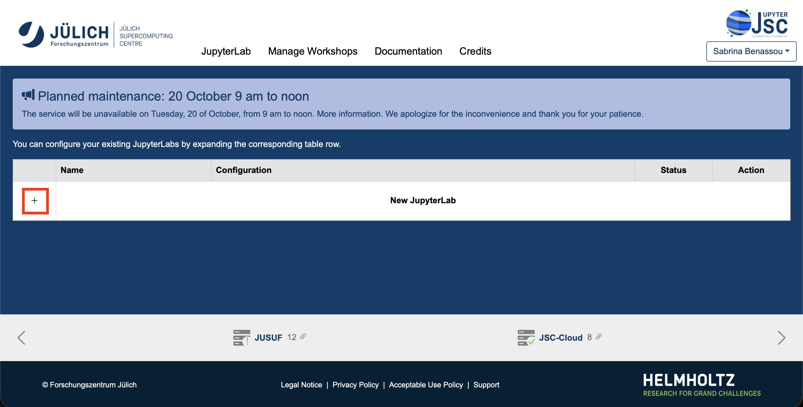
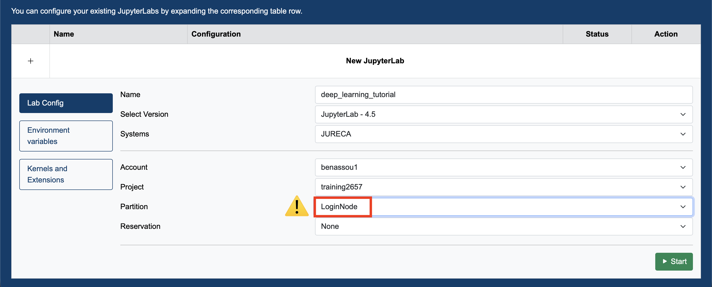
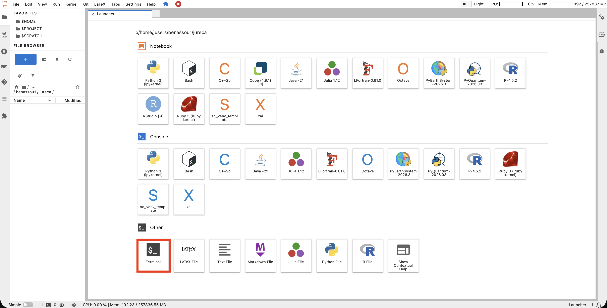
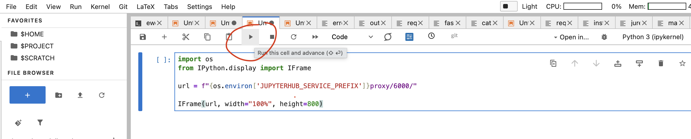
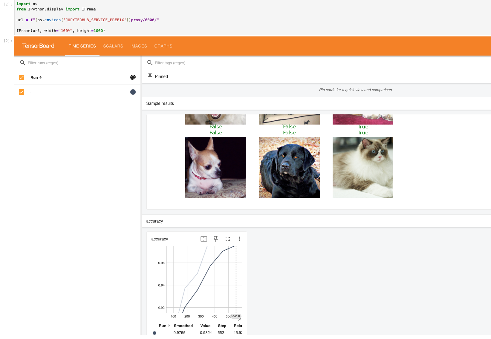

Running Deep Learning Models on HPC System
Sabrina Benassou, Ismael Khalfaoui
October 14, 2026
Important Links
Links for the skill-up
Please open the slides on your device so you can copy and paste from the slides.

Goals for this course
- Access our machines in Jülich using Jupyter-JSC 👩💻
- Use the file system efficiently so that the supercomputer can access your data quickly 🏃
- Distribute your machine learning workload 💪

Team

Schedule
| Time | Title |
|---|---|
| 11:00 - 11:15 | Introduction and Definitions |
| 11:15 - 11:30 | Use Jupyter-JSC to connect to the Supercomputer |
| 11:30 - 11:45 | How to run code on a compute node |
| 11:45 - 12:15 | Single GPU training |
| 12:15 - 12:45 | Multiple GPU training using Distributed Data Parallel (DDP) |
| 12:45 - 13:00 | Wrap up and Q&A |
Jülich Supercomputers

What is a supercomputer?
- Compute cluster: Many computers bound together locally
- Supercomputer: A lot of computers bound together
locally 😒
- with a fancy network 🤯
Anatomy of a supercomputer
- Login nodes: Normal machines for compilation, data transfer, scripting, etc. No GPUs. A limited number of shared CPU cores.
- Compute nodes: Guess what?
- For compute! With GPUs! 🤩
- High-speed, ultra-low-latency network
- Shared networked file systems
JURECA DC Compute Nodes
- 192 accelerated nodes (with GPUs)
- 2x AMD EPYC Rome 7742 CPUs at 2.25 GHz (128 cores/node)
- 512 GiB memory
- Network: Mellanox HDR InfiniBand (FAST💨 and EXPENSIVE💸)
- 4x NVIDIA A100 with 40 GB 😻
- TL;DR: 24576 cores, 768 GPUs 💪
- Way deeper technical info at JURECA DC Overview
You don’t use the whole supercomputer
You submit jobs to a queue asking for resources

- Your job(s) enter the queue and wait for their turn
- When there are enough resources for that job, it runs
You don’t use the whole supercomputer
And get results back

Supercomputer Usage Model
- Using the supercomputer means submitting a job to a batch system.
- No node-sharing. The smallest allocation for jobs is one compute node (4 GPUs).
- Maximum runtime of a job: 24 h.
Recap
- Login nodes are for submitting jobs, downloading and moving files, compiling code, etc.
- NOT FOR TRAINING DEEP LEARNING MODELS!
Compute time
- Compute time allocation is based on compute projects. For every compute job, a compute project pays.
- Time is measured in core-hours. One hour of JURECA DC is 128 core-hours.
- Example: A job runs for 8 hours on 64 nodes of JURECA DC: 8 * 64 * 128 = 65536 core-h!
Connecting to JURECA DC
Recall that you should have completed the following preparations already:
- Go to the course project on JuDOOR: training2657.
- Join the workshop’s compute project
training2657. - Sign the Usage Agreements (video).
Connecting to JURECA DC via Jupyter-JSC
Go to https://jupyter.jsc.fz-juelich.de/hub/login and choose Sign in with JSC account.

Connecting to JURECA DC via Jupyter-JSC
Log in with your JuDOOR account.
- Confirm that you allow the JSC Login service to use the information provided by the identity provider.
Create a new JupyterLab

Create a new JupyterLab
Please choose the following configuration. In particular, it is important that you choose the login node!

Click Open once it is ready.
Open a terminal on the login node

Open a terminal on the login node

Exercise: Create folders for the workshop
Use the terminal in Jupyter-JSC for the following steps:
Create your course folder.
- If you click on
$PROJECTon the left, you should see a folder with your name.
Exercise: Create folders for the workshop
Create a shortcut (link) to your course folder in your home folder.
Enter your course folder.
Exercise: Create folders for the workshop
Link certain cache directories to the course folder. They should not be in
$HOME, as it has limited space.
- If you click View > Show Hidden Files, you should see the cache folders you created.
Working with the supercomputer’s software
- We have literally thousands of software packages, compiled specifically for the supercomputer.
- Full list
- Detailed documentation
Example: PyTorch
Copy and paste these lines:
# This command fails, as we do not have the correct PyTorch environment. python -c "import torch; print(torch.__version__)" # Then load the correct modules. module load Stages/2025 module load GCC OpenMPI Python # And we run a small test: import PyTorch and ask for its version. python -c "import torch; print(torch.__version__)"
Demo code
Create a new Python file in your course folder.
Open it in the editor and paste this into the file:
How to run it on the login node
Run it on the login node.
But that’s not what we want… 😒
So we send it to the queue!
HOW?🤔
Slurm 🤯

Simple Linux Utility for Resource Management
Slurm submission file
- A simple text file that describes what we want, how much of it we need, how long we need it, and what to do with the results
Create a new file:
Slurm submission file example
Paste the following content into the file:
#!/bin/bash #SBATCH --account=training2657 # Who pays? #SBATCH --nodes=1 # How many compute nodes #SBATCH --job-name=matrix-multiplication #SBATCH --ntasks-per-node=1 # How many MPI processes per node #SBATCH --cpus-per-task=1 # How many CPUs per MPI process #SBATCH --output=output.%j # Where to write results #SBATCH --error=error.%j #SBATCH --time=00:01:00 # For how long can it run? #SBATCH --partition=dc-gpu # Machine partition module load Stages/2025 module load GCC OpenMPI PyTorch torchvision # Load the correct modules on the compute node(s) srun python matrix.py # srun tells the supercomputer how to run it
Submitting a job:
sbatch
Submit the Slurm job.
Are we there yet?

Are we there yet? 🐴
Check the status of the job using the following command:
Close it with Ctrl+C.
STis the status:- PD (pending)
- CF (configuring)
- R (running)
- CG (completing)
The job is wrong and needs to be cancelled
Check logs
By now, you should have output and error log files in your directory. Check them! For example:
- Here, 412169 is the job ID. You can open the files in the editor.
Let’s train a 🐈 classifier!
This is a minimal demo to show some quirks of the supercomputer.
We will train:
- ResNet-34, a convolutional neural network pretrained on image data, to classify images as cats or dogs
- Training data: the Oxford-IIIT Pet dataset, containing about 7,400 images of cats and dogs
- using the fastai library (high level training setup)
Some preparations: Set up a virtual environment using uv
Load the modules we want to use:
Create a new virtual environment in your course folder
We need to install some additional packages. Create a file
touch requirements.txtwith the following contentaccelerate==1.1.1 datasets==3.6.0 fastai==2.8.12 fsspec==2025.2.0 ipykernel==7.3.0 lightning==2.6.6 matplotlib==3.9.2 numba==0.60.0 numpy==1.26.4 pandas==2.2.2 pyarrow==18.1.0 scipy==1.13.1 scikit-learn==1.5.2 sentencepiece==0.2.0 tensorboard==2.21.0 torch==2.8 torchrun-jsc==0.0.19 transformers==4.46.3 wandb==0.30.0Install these by
Finally, activate the virtual environment:
- We will always use this virtual environment from now on!
The cat classifier
Create a file in your course folder:
touch cats.pywith the following content:
from fastai.vision.all import * from fastai.callback.tensorboard import * # print("Downloading dataset...") path = untar_data(URLs.PETS)/'images' print("Finished downloading dataset") # def is_cat(x): return x[0].isupper() # Create the data loaders and resize the images dls = ImageDataLoaders.from_name_func( path, get_image_files(path), valid_pct=0.2, seed=42, label_func=is_cat, item_tfms=Resize(224)) print("On the login node, this will download ResNet-34") learn = vision_learner(dls, resnet34, metrics=accuracy) cbs=[SaveModelCallback(), TensorBoardCallback('runs', trace_model=True)] # Trains the model for 6 epochs with this dataset learn.unfreeze() learn.fit_one_cycle(6, cbs=cbs)
Submission file for the classifier
Create a Slurm file.
#!/bin/bash #SBATCH --account=training2657 #SBATCH --mail-user=MYUSER@fz-juelich.de #SBATCH --mail-type=ALL #SBATCH --nodes=1 #SBATCH --job-name=cat-classifier #SBATCH --ntasks-per-node=1 #SBATCH --cpus-per-task=128 #SBATCH --output=output.%j #SBATCH --error=error.%j #SBATCH --time=00:20:00 #SBATCH --partition=dc-gpu #SBATCH --reservation=inm_res # For today only module load Stages/2025 module load GCC OpenMPI PyTorch torchvision # Load the correct modules on the compute node(s) source ~/course/.venv/bin/activate # Activate the virtual environment srun python cats.py
Submit it
Run the cat classifier.
Submission time
- Check the error and output logs and the queue.
Check the error.${JOBID} file
You will get an error. Why?
🤔…
What is it doing?
This downloads the dataset:
This line downloads the pre-trained weights:
Compute nodes have no internet connection!
- But the login nodes do!
- So we download our dataset beforehand…
- On the login nodes!
On the login node
Comment out the line that performs the AI training:
Run the code on the login node!
Run the downloader on the login node
$ source .venv/bin/activate
$ python cats.py
Downloading dataset...
|████████-------------------------------| 23.50% [190750720/811706944 00:08<00:26]
Downloading: "https://download.pytorch.org/models/resnet34-b627a593.pth" to /p/project/ccstao/cstao05/.cache/torch/hub/checkpoints/resnet34-b627a593.pth
100%|█████████████████████████████████████| 83.3M/83.3M [00:00<00:00, 266MB/s]Run it again on the compute nodes!
Uncomment the line that performs the training:
Submit the job again!
7. Check output files
The activation script must be sourced, otherwise the virtual environment will not work.
Setting vars
Downloading dataset...
Finished downloading dataset
epoch train_loss valid_loss error_rate time
Epoch 1/1 : |-----------------------------------| 0.00% [0/92 00:00<?]
Epoch 1/1 : |-----------------------------------| 2.17% [2/92 00:14<10:35 1.7452]
Epoch 1/1 : |█----------------------------------| 3.26% [3/92 00:14<07:01 1.6413]
Epoch 1/1 : |██---------------------------------| 5.43% [5/92 00:15<04:36 1.6057]
...
....
Epoch 1/1 :
epoch train_loss valid_loss error_rate time
0 0.049855 0.021369 0.007442 00:42 - 🎉
- 🥳
Tools for results analysis
We already ran the code and have results.
To analyze them, there is a useful tool called TensorBoard.
We already have the code for it in our example!
TensorBoard
In the terminal enter:
Then open a jupyter notebook (File -> New Notebook), select Python 3 (ipykernel) and execute:

TensorBoard

Now, Let’s talk about DATA

I/O is separate and shared
- All compute nodes of all supercomputers see the same files
- Performance tradeoff between shared accessibility and speed
- Our I/O server is almost a supercomputer by itself

Where do I keep my files?
Always store your code in the project1 folder (
$PROJECT_projectname). In our caseStore data in the scratch directory for faster I/O access (
$SCRATCH_projectname). ⚠️Files in scratch are deleted after 90 days of inactivity.Store the data in
$DATA_datasetfor a more permanent location.
Now lets talk about Parallelization technique
Before Starting
If you have not done it already, clone the following repo:
What this code does
- It trains a Transformer language model on WikiText-2 dataset to predict the next word in a sequence.
- Transformers is a deep learning model architecture that uses self-attention to process sequences in parallel.
- WikiText-2 is a word-level language modeling dataset consisting of over 2 million tokens extracted from high-quality Wikipedia articles.
What this code does
Again, this is not a deep learning course.
If you are not familiar with the model and the dataset, just imagine it as a black box: you provide it with text, and it generates another text.


Libraries
- You already downloaded the libraries that we will
use today:
- PyTorch: A deep learning framework for building and training models.
- datasets A library from Hugging Face used to access, load, process, and share large datasets.
Let’s have a look at the files
train/Lit_training.py and
Lit_training.sbatch in the repo.

Run the Training Script
There are TODOs in these two files. Do not modify the TODOs for now. The code is already working, so you don’t need to make any changes at this point.
Now run:
Spoiler alert 🚨
The code won’t work.
Check the output and error files
What is the problem?
- Remember, there is no internet on the compute node.
- Therefore, you should:
Comment out lines 22 to 60.
Activate your environment:
Run:
Uncomment back lines 22-60.
Finally, run your job again 🚀:
JOB Running
- Congrats, you are training a DL model on the supercomputer using one GPU 🎉
llview
- You can monitor your training using llview.
- Use your Judoor credentials to connect.
- Check the job number that you are intrested in.


llview
- Go to the right to open the PDF document.
It may take some time to load the job information, so please
wait until the icon turns blue.


llview
- You have many information about your job once you
open the PDF file.


GPU utilization
You can see that in fact we are using 1 GPU


GPU utilization
It is a waste of resources.
The training takes time (1h32m according to llview).
Then, can we run our model on multiple GPUs ?
llview
- We are still using 1 GPU

We need communication
Without correct setup, the GPUs might not be utilized.
Furthermore, we don’t have an established communication between the GPUs


We need communication

We need communication

collective operations
- The GPUs use collective operations to communicate and share data in parallel computing
- The most common collective operations are: All Reduce, All Gather, and Reduce Scatter
All Reduce

- Other operations, such as min, max, and avg, can also be performed using All-Reduce.
All Gather

Reduce Scatter

Terminologies
- Before going further, we need to learn some terminologies
World Size

Rank

local_rank

Now
That we have understood how the devices communicate and the terminologies used in parallel computing, we can move on to distributed training (training on multiple GPUs).
Distributed Training
- Parallelize the training across multiple nodes,
- Significantly enhancing training speed and model accuracy.
- It is particularly beneficial for large models and computationally intensive tasks, such as deep learning.[1]
Distributed Data Parallel (DDP)
DDP is a method in parallel computing used to train deep learning models across multiple GPUs or nodes efficiently.

DDP

DDP

DDP

DDP

DDP

DDP

DDP

DDP
If you’re scaling DDP to use multiple nodes, the underlying principle remains the same as single-node multi-GPU training.
DDP

DDP recap
- Each GPU on each node gets its own process.
- Each GPU has a copy of the model.
- Each GPU has visibility into a subset of the overall dataset and will only see that subset.
- Each process performs a full forward and backward pass in parallel and calculates its gradients.
- The gradients are synchronized and averaged across all processes.
- Each process updates its optimizer.
Let’s start coding!
Whenever you see TODOs💻📝, follow the instructions to either copy-paste the code at the specified line numbers or type it yourself.
Depending on how you copy and paste, the line numbers may vary, but always refer to the TODO numbers in the code and slides.
Pass the number of nodes
TODO 1💻📝: At line 55 pass to num_nodes the number of nodes
We are almost there
- Before launching our job, we need to add some lines to Lit_training.sbatch file
Setup communication
In Lit_training.sbatch file:
- TODOs 2💻📝:
At line 3, increase the number of GPUs to 4:
- TODOs 3💻📝:
At line 4, set the number of tasks per node to 4.
- TODOs 4💻📝:
At line 20, pass the correct number of devices.
Setup communication
Stay in Lit_training.sbatch file:
TODO 5💻📝: we need to setup MASTER_ADDR and MASTER_PORT to allow communication over the system.
At line 22, add the following:
# Extracts the first hostname from the list of allocated nodes to use as the master address. export MASTER_ADDR="$(scontrol show hostnames "$SLURM_JOB_NODELIST" | head -n 1)" # Modifies the master address to allow communication over InfiniBand cells. if [ "$SYSTEMNAME" = juwelsbooster ] \ || [ "$SYSTEMNAME" = juwels ] \ || [ "$SYSTEMNAME" = jurecadc ] \ || [ "$SYSTEMNAME" = jusuf ]; then # Allow communication over InfiniBand cells on JSC machines. MASTER_ADDR="$MASTER_ADDR"i fi export MASTER_PORT=7010
done ✅
You can finally run:
llview
Let’s have a look at our job using llview again.
You can see that now, we are using all the GPUs of the node


llview
And that our job took less time to finish training (25m vs 1h32m with one GPU)
But what about using more nodes ?
What about using more nodes ?
Multi-node training
TODO 6💻📝: in
Lit_training.sbatchat line 2, you can increase the number of nodes to 2:Hence, you will use 8 GPUs for training.
Run again:
llview
Open llview again.
You can see that now, we are using 2 nodes and 8 GPUs.

And the training took less time (14m)

Amazing ✨
RECAP
By now, I expect you have managed to:
- Stay awake for the most part of this tutorial 😴
- Connect to JURECA using Jupyter-JSC
- Edit files, submit jobs and read results on JURECA
- You know where to store your code and your data. 🗂️📄
- You know what distributed training is. 🧑💻
- You can submit training jobs on a single GPU, multiple GPUs, or across multiple nodes. 🎮💻
- You know how to monitor your training using llview. 📊👀
Find Out More
Here are some useful: